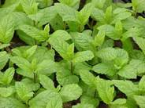

AGR 301 :: Lecture 18 :: MENTHA (MINT)

English name: Mint
Family: Lamiaceae; labiatae
Indian name: Pudina (Tamil), Putiha (Sanskrit), Pudina (Hindi & Kanada)
Species and Varieties :
Mentha arvensis (Japanese mint)
M.piperita L. (Peppermint)
M.Spicata L. (Spearmint)
M.Citrata Ehrh. (Bergamot mint)
Himalaya, Kalka, Shivalik, Kosi, Gomati, EC-41911, Kulkrail, Kiran, MSS-1, MSS-5 Punjab spearmint-1
Distribution: India, Brazil,Paraguay,USA
Origin: Mediterranean regions
Uses: Cosmetics, Culinary purposes, Flavoring, Perfumery
Mints are a group of perennial herbaceous plants, belonging to the family Lamiaceae:Labiatae, which yield essential oil on distillation. The various species of mints which are commercially cultivated in different parts of the world are:Japanese mint or corn mint or field mint (Mentha arvensis subsp haplocalyx Briquet var. Piperscens Holmes var. Javanica), peppermint (M.Piperita L.) spearmint or garden mint or lamb mint (M.spicata L.) and bergamot mint or orange mint (M.citrata Ehrh.)
Distribution
Mint is believed to have originated in the Mediterranean basin and, from there, spread to the rest of the world by both natural and artificial means. Among the mints, Japanese mint is cultivated on a large scale in Brazil, Paraguay, China, Argentina, Japan, Thailand, Angola and India. Peppermint is grown in the USA, Morocco, Argentina, Australia, France, USSR, Bulgaria, Czechoslovakia, Hungary, Italy, Switzerland and on a small scale in many Europe countries. USA is the major producer of peppermint and spearmint.
The total area under mint cultivation, which is mostly confined to Uttar Pradesh and the Punjab is around 10,000 ha.
Varieties
A) Japanese mint
Himalaya (MAS0-1): It is a selection released by the CIMAP Lucknow which contains 0.8 to 1.0% oil (FWB) with 81% methol content and a low congealing point.
Kalka (Hyb-77); It is a tall, vigorous variety evolved by the CIMAP Lucknow.
Shivalik: It was introduced from China and released by the CIMAP, Lucknow.
Ec-41911: This is a progeny selection of an interspecific cross between M.arvensis x M.piperita.
B) Peppermint
Kukrail: This is a high yielding variety developed and released by the CIMAP Lucknow.
C) Spearmint
MSS-1: This is a selection from the spearmint cultivars inteoduced from USA. This variety was released by the CIMAP, Lucknow.
MESS-5: It is a selection from MSS-1 made at the CIMAP,Lucknow.
Punjab spearmint-1: This variety is a clonal selection made at the CIMAP, Lucknow . Arka and Neera are the recently released variaties from CIMAP, Lucknow.
Chemical Composition and Uses
Japanese mint (M.arvensis)
Japanese mint is a primary source of menthol. The fresh leaves contain .4-6.0% oil. The main constituents of the oil are menthol (65-75%), menthone (7-10%) and menthyl acetate (12-15%) and terpenes (pipene, limonene and comphene).
Peppermint (M.piperita)
The fresh herb contains essential oils ranging from 0.4 to 0.6%. The constituents of peppermint oil are almost similar to Japanese mint oil. However, the menthol content is lower in peppermint oil and varies between 35-50%. The other constituents are menthyl acetate (14-15%), menthone (925%) menthoufuran and terpenes like pinene and limonene.
Bergamot mint (M.citrate)
Linalool and linalyl acetate are the main constituents of Bergamot mint oil. The oil is used directly in perfumes. Cosmetic preparations like scents, soaps, after-shave lotions and colognes also contain this oil.
Spearmint (M.spicata)
The principal constituent of spearmint oil is carvone (57.71%) and the other minor constituents are phellandrene, limonene,L-pinene and cinelole. The oil is used mostly as a flavouring in toothpastes and as food flavouring in pickles and spices, chewing gum and confectionery, soaps and sauces.
Seasons
In the plains, planting is done during the winter months, whereas in temperate climates, planting is done in autumn or spring from the last week of December to the first week of March or from the first week of January to the third week of February. Late planting always gives poor yields.
Soil
Medium to fertile deep soil, rich in humus is ideal for the cultivation of mint. The soil should have a good water-holding capacity but water-logging should be avoided. A pH range of 6-7.5 is best.
Climate
Japanese mint can be grown in all tropical and subtropical areas under irrigation. However, it does not tolerate damp winters which cause root-rot. A temperature of 20-25⁰C promotes vegetative growth, but the essential oil and menthol are reported to increase at a higher temperature of 30⁰C under Indian conditions. Peppermint and spearmint cannot be grown profitably in tropical and sun tropical areas, especially those areas with very high summer temperatures (41⁰C) and the ideal yield is obtained only in humid and temperate conditions like in Kashmir and the hills of Uttar Pradesh and Himachal Pradesh. Open, sunny situations without excessive rains during the growing period are congenial for the good growth and development of the oil.
Bergamot mint can be grown both in temperate as well as subtropical area. However, the yield is higher in temperate climates.
Land Preparation
Mints require thoroughly ploughed, harrowed, fine soil. All the stubble of weeds should be removed before the crop is planted. Manuring may be done at the time of land preparation by adding FYM @ 25 to 30 t/ha. Green manuring may also be done before the mint is planted. Sun-hemp (Crotalaria juncea L.) is an ideal green manure crop. Mints are planted on flat land or ridges. Hence, flat beds of convenient sizes or ridges are made according to the spacing recommended.
Cultivation
Propagation
Mints are propagated through the creeping stolons or suckers. In the case of peppermint and bergamot mint, even runners are planted. Stolen are obtained from the previous year’s planting. A hectare of well-established mint, on an average, provides enough planting material for ten hectares. About 400 kg stolons are required for planting one hectare of land. The best time for obtaining stolons is during the months of December and January.
Planting
The stolons are cut into small pieces (7-10 cm) and planted in shallow furrows about 7-10 cm deep with a row-to-row distance of 45-60 cm, manually or mechanically. While planting on ridges, the stolons are planted half-way down on the inner sides of the ridges. The plot is irrigated immediately after planting.
Fertilizer Application
Mint responds very well to a heavy application of nitrogenous fertilizers. The increase in herbage by the application of phosphorus is not as remarkable as in case of nitrogen. Generally, nitrogenous fertilizers @ 80-120 kg P and K at 50 kg P2O5 and 40 kg K2O/ha is required for a good crop of mint. However, in M.arvensia an increase of up to 160 kg N/ha and, in M.piperate, 125 kg N/ha has given increased fresh herbage and essential oil-yield. An amount of 100-120 kg N/ha is recommended for producing the optimum herb and oil-yield in M.citrata under Pantnagar conditions. A split application of 75 kg N/ha in combination with P at 60 kg P2O5/ ha is recommended under Kodaikanal conditions. Potassium application has no significant effect on herb and oil-yield. In M.spicata, the maximum herb-yield is obtained with the application of 100-120 kg N/ha. Nitrogen may be applied in three split doses at 1, ½-2 and 3 months after planting and the third dose after the first harvest of the crop.
Boron deficiency reduces both the yield of green herb and the essential oil in peppermint. Increased yields of herb, menthol content and essential oil content in peppermint have been obtained by using a combination of boron and zinc fertilizers, Visual symptoms have been documented for some cultivars of Japanese mint towards Fe and Zn deficiencies. With respect to Zn, the crop response was maximum at 20 kg/ha if Zn applied at planting. Similarly, experiments conducted at the CIMAP, Lucknow, have shown that the application of 20 kg/ha of sulphur will increase the herb and oil-yield in M.spicata. Among the different sources of S, calcium sulphate was best followed by ammonium sulphate and elemental sulphur.
Irrigation
The water requirement of mint is very high. Depending upon the soil and climatic conditions, the crop is irrigated 6-9 times before the first monsoon. The crop requires three irrigations after the monsoons during September, October and November. Sometimes another irrigation is required during winter, if the plant is dormant and there are no winter rains to encourage proper growth of the under ground stems. Experiments conducted at Pantnagar have revealed that fifteen irrigation are required to get the maximum herb and oil-yield in Japanese mint. When mints are grown in temkperte climates, only 3-4 irrigation during the period from July to October are required.
Inter-culture and Weed Control
Uninterrupted weed growth causes about 60% reduction in herb and oil-yields. Hence, mints require weeding and hoeing at regular intervals in the early stages of crop growth. One hand-weeding is required after the first harvest. Sinbar is the only herbicide which controls a large number of weeds effectively, when applied as a post-emergence spray @ 1 kg/ha. However, combining organic mulch with a combination of 0.5 kg/ha of Oxyfluorfen herbicide and weeding or application of Pendimethion herbicide at 1 kg/ha and weeding are found to give excellent weed control throughout the crop growth. Dalapon (4 kg/ha), or Gramaxone (2.5 1/ha) as post-emergent spray; Diuron (2 kg a.i/ha) or Terbacil treatment (2 kg a.i/ha) as preemergent treatment are also recommended for chemical weed control in mints.
In low temperature areas, the plants become dormant in November. In order to give a perennial crop (of 3 years only) in peppermint, recultivation is done either in autumn (November-December) or in spring (March-April). When peppermint is grown as a perennial crop, the first year crop is called ‘Row mint’, while the second and third year crop is called ‘Meadow mint’. This practice is not followed in other mints which are to be planted every year.
Crop Rotation
Crop rotations help to maintain a reasonable control on weed growth, preserve the fertility of the soil and to obtain higher returns from the land. The following crop rotations are in practice in Uttar Pradesh (a) Mint-maize-potato) (b) Mint-early paddy and potato and (c) Mint-late paddy and sweet pea. Whereas, in Punjab, the farmers practice mint-maize and rape seed/mustard and mint-maize and potato or mint and paddy rotation.
The recommendation for the Terai region of Uttar Pradesh is a 2-year rotation of mint-summer fallowing or millet (fodder) followed by mint on poor fertility lands and mint-wheat-paddy and mint on medium fertile lands.
Harvesting
Japanese mint is generally harvested after 100-120 days of planting, when the lower leaves start turning yellow. If the harvesting is delayed the leaves start falling, resulting in loss of oil. Further, harvesting should be done in bright sunny weather. Harvesting consists of cutting the green herb by means of a sickle 2-3 cm above the ground. A second harvest is obtained about 80 days after the first harvest and the third one after about 80 days from the second harvest. Whereas, in peppermint, spearmint and bergamot mints which are grown in temperate climates, the first crop is ready by the end of June and the second in September or October.
Yield
A good crop of Japanese mint can give as high a yield as 48 t/ha of fresh herb. However, the average yield of mints from three cuttings is 20-25 t/ha. The fresh herb contains 0.4% oil.
Distillation of Oil
Mint oil is obtained by distilling either the fresh or the dry herb. The distillation is done both in primitive and modern stills; in the former the principle of water and steam-distillation is followed. While in the later steam generated in a separate boiler is employed. The stems are removed from the dried material prior to distillation, because they constitute 30 to 50% of the material and contain only traces of the oil.
The average yield of oil is 50-70 kg/ha. Although bergamot mint as well as Japanse mint give an average yield of 70-100 kg/ha, the yield of peppermint oil is lower with an average of 50 kg/ha.
Storage of Oil
Mint oil is a light and golden-coloured, motile liquid and it should be completely free from moisture before storage. It is stored in large steel, galvanized steel or aluminium containers, filled up to the brim to protect against any air remaining inside and placed in a cool storage godown, away from light and humidity.
MULTIPLE CHOICE QUESTIONS
- Hindi name of Mint
a. Pudina b. Putiha c. None - The centre of origin of Mint is ________
a. Mediterranean b. Russia c. S. Africa - Planting of Mint is done during __________ month in plains
a. Spring b. Summer c. Winter - Planting of Mint is done during __________ season in temperate climates
a. Kharif b. Summer c. autumn - The fresh mint contains ________% oil
a. 0.8 b. 0.6 c. 0.4
| Download this lecture as PDF here |